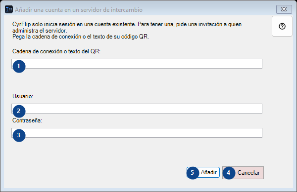
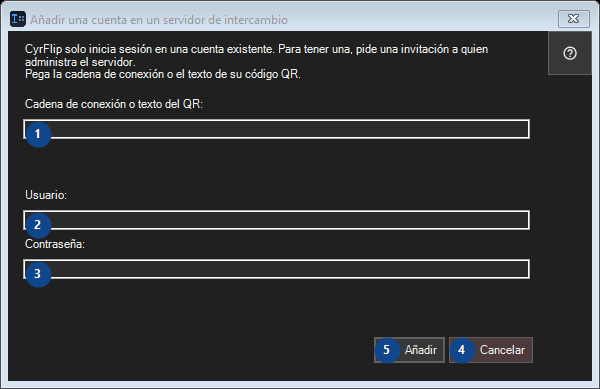

Añadir una cuenta en un servidor de intercambio
Para qué sirve
Pasa lo que has copiado a tus otros dispositivos a través de un servidor de intercambio propio.


Orden de uso
Lee las explicaciones numeradas, elige los valores necesarios y continúa con el comando de la ventana.
Elementos
1. CyrFlip solo inicia sesión en una cuenta existente. Para tener una, pide una invitación a quien administra el servidor. Pega la cadena de conexión o el texto de su código QR.
Elige o introduce el valor de la etiqueta contigua. Revísalo antes de continuar.
Tus atajos2. CyrFlip solo inicia sesión en una cuenta existente. Para tener una, pide una invitación a quien administra el servidor. Pega la cadena de conexión o el texto de su código QR.
Elige o introduce el valor de la etiqueta contigua. Revísalo antes de continuar.
Tus atajos3. CyrFlip solo inicia sesión en una cuenta existente. Para tener una, pide una invitación a quien administra el servidor. Pega la cadena de conexión o el texto de su código QR.
Elige o introduce el valor de la etiqueta contigua. Revísalo antes de continuar.
Tus atajos4. Cancelar
Usa este comando para la acción indicada. Lee cualquier confirmación antes de aceptarla.
Tus atajos5. Añadir
Usa este comando para la acción indicada. Lee cualquier confirmación antes de aceptarla.
Tus atajos